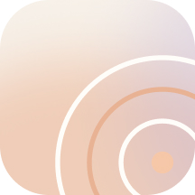

聊近况
从今天在做什么，到最近一次出门，让父母自然讲述刚发生的事。

见微 开始一次观察 ↗有些变化，需要在一次次倾听中被看见。
A GENTLER WAY TO NOTICE
真实的亲子对话，是见微唯一需要的入口。没有测试感，只有生活里自然发生的声音。
从今天在做什么，到最近一次出门，让父母自然讲述刚发生的事。
请他们分享一段熟悉的经历，听听记忆如何被组织成故事。
让父母教你做一道菜、养一盆花，表达最熟悉的步骤与方法。
LISTEN, THEN UNDERSTAND
AI 将语言学研究转译成家人看得懂的提示，只描述这次对话里真实发生的现象。
A WARMER KIND OF REPORT
每一次通话，都会为她的声音年轮新增一圈。见微把变化放在时间里看，也把关心留在每一句话里。
本次语言观察已完成 · 所有判断均可回溯原文
TIME, SEEN TOGETHER
每一通电话都是一个新的样本。见微把六次自然对话放在同一条时间线上，只呈现波动，不替你下结论。
观察方式 同一位长辈 · 相近时长 · 自然对话 · 仅用于长期趋势参考
004 / START SMALL
不需要改变你们平时的相处方式。选择一个父母状态不错的时间，像往常一样聊聊最近的生活。
年龄段、方言、近期状态，让问题更贴近生活。
从热身到近期经历，问题自然，不像考试。
录音前先征得父母同意，保持平时的说话方式。
AI 先检查样本质量，再生成克制的单次报告。